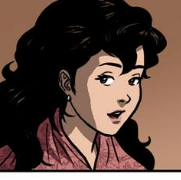
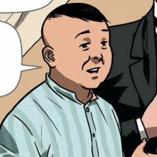
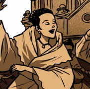

| MEAL PLANNER |
 |
Crisostomo Ibarra |
- He is the son of a wealthy man named Don Rafael who recently passed
- He is a well educated man who is the lover of Maria Clara
|
|  |
Maria Clara |
- She is the daughter of Kapitan Tiago and was said to be a very beautiful woman
- She is the lover of Crisostomo Ibarra
|
|  |
Kapitan Tiago |
- He took carre of Maria Clara from when she was a baby
- He is a very religious and influential person
|
|  |
Donya Pia Alba |
- She is the mother of Maria Clara
- She is the wife of Kapitan Tiago
|
 |
Pilosopong Tasyo |
- He is a well educated old man and was called crazy for always studying
- He spent all his money on books and studied after his wife died
|
 |
Sisa |
- She is the mother of Basilio and Crispin
- She sews clothes for a living
|
 |
Basilio |
- He is a Sacristan at their local Church
- He works hard to get his family out of poverty
|
 |
Crispin |
- He is also a Sacristan at their local Church
- He is the youngest sibling in their family
|
 |
Padre Damaso |
- A mean old Spanish priest who is strict towards the Filipinos
- He was once the head of the Church until he was replaced by a new priest
|
 |
Padre Salvi |
- A cruel priest who increases tax for those who disobey him rather than physical punish them
- Replaced Padre Damaso as the leader of the Church and became the most powerful in San Diego
|